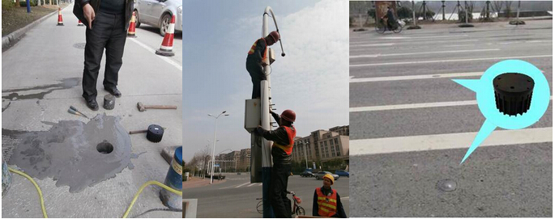
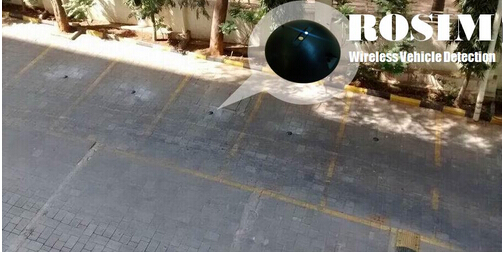
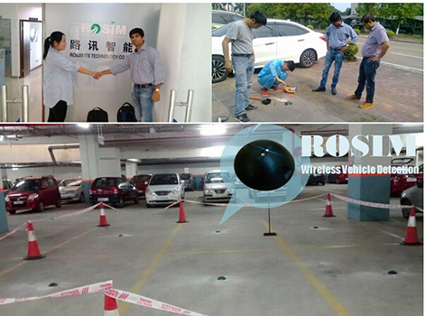

The cost-effective WVD-130 wireless vehicle detection sensors were embedded in the road to acquire real-time traffic flow information.
These small wireless sensors connect to the WAP wireless access point directly,
even if it was mounted 125 meters away,
and form a wireless sensor network covering the whole intersection.
These small wireless sensors were installed very easily in less than 5 minutes per lane. In each intersections of this system, a WAP wireless access point is employed to provide a 120 meters coverage wireless sensor network (WSN) to which all the WVD sensors connect. All the sensor data is collected by WAP access point and relayed to computing and control system.
These small size wireless sensors were mounted on each of the parking spots to acquire real-time occupancy data for online parking management services.
in which WPSD sensors are employed to acquire real-time occupancy data. Rebecca took them to visit our demo project, manufacturing line, and show them the easy operating install of ROSIM wireless sensors.
ROSIM specializes in the innovation and production of wireless vehicle detection solutions for ITS traffic and parking systems.
 English
English 中文
中文